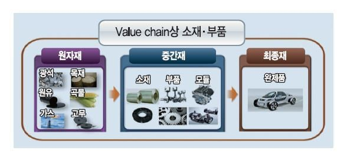

한국은 식민지로 수탈당하고 전쟁특수도 없었지만 스스로 일어서 현재 최선진국 중 하나로 우뚝 서있음
심지어 최빈국에서 선진국까지 단기간에 올라오기까지 함
그래서 수많은 나라가 한국을 벤치마킹 하고 있고 이는 동남아가 대표적
하지만 동남아는물론이고 현재 후진국들은 아쉽게도 절대로 올라오지 못함

경공업을 거쳐 여기 중간재 산업에서 실력과 경험을 충분히 쌓아야 현재 한국이 진행하고있는 고부가가치산업(반도체, IT 등)에 도전해볼만 함
근데 수많은 나라들이 여기 중간재 산업에서 다 나가 떨어짐
나가 떨어지는 이유가 무엇이냐?
이새끼임(특 : 존나 떡벽임)
위로는 인구빨+공산권+자본빨로 어떻게든 치고 올라오려고 하면서
밑으로는 인구빨+저렴한 인건비+자원빨로 밑에서 올라오려는 놈들 사다리 걷어차기 자동사냥 돌려버림
심지어 현재 이새끼는 중진국(개발도상국)임
체급으로보면 이새끼가? 싶은데 아무튼 중진국임
이새끼가 중진국에서 왕처럼 군림하고 있는 한 밑에서 치고 올라오긴 존나 힘들 것....
던 아니고 든